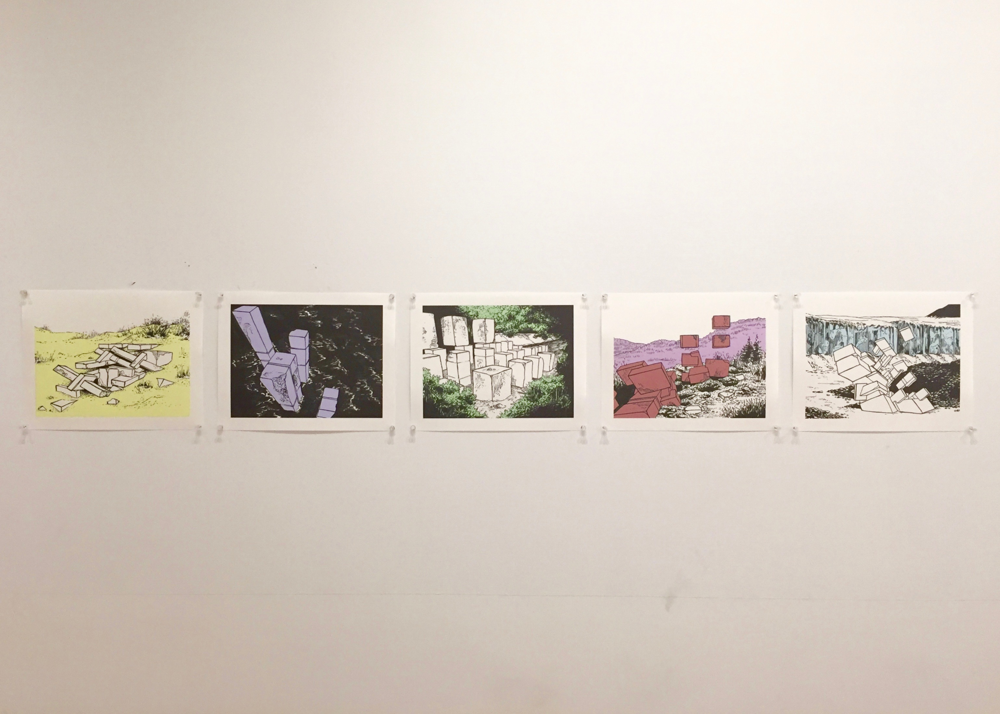
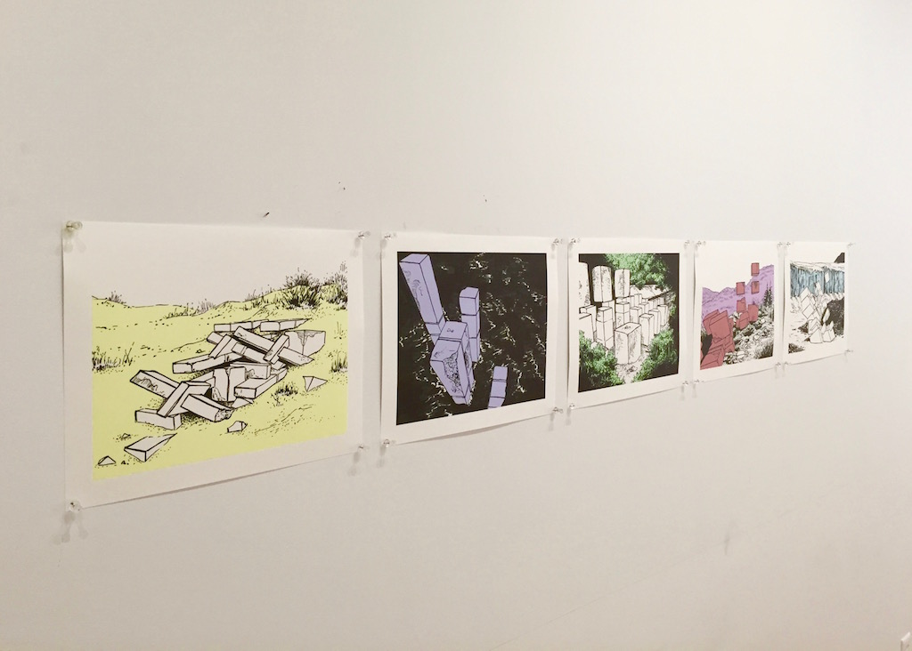
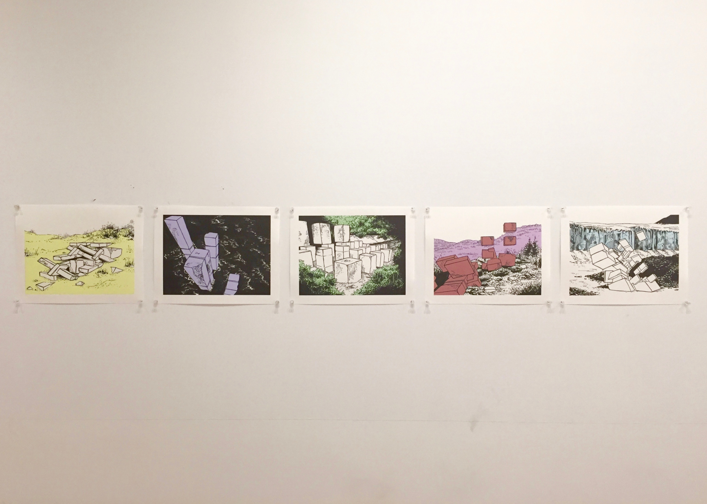
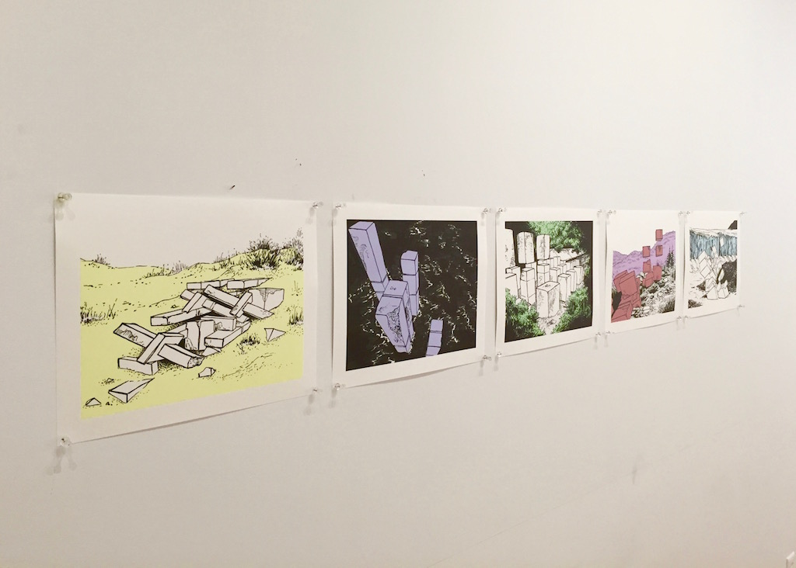
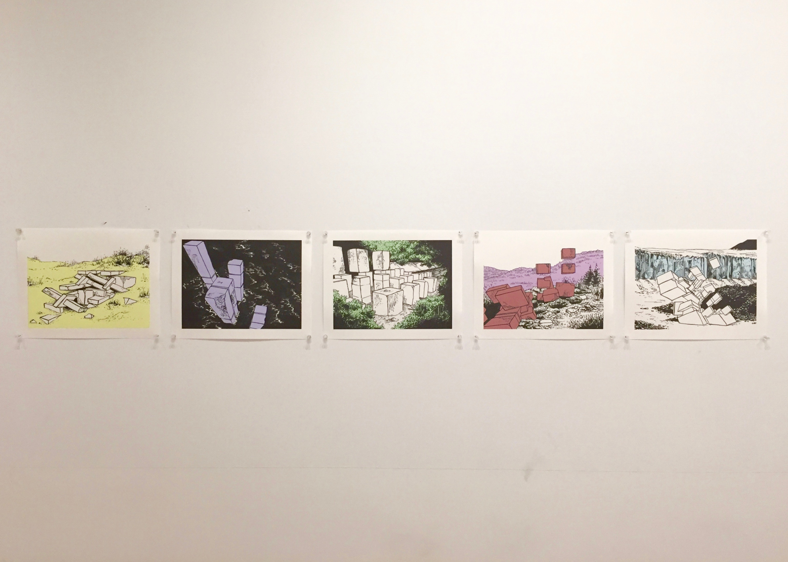
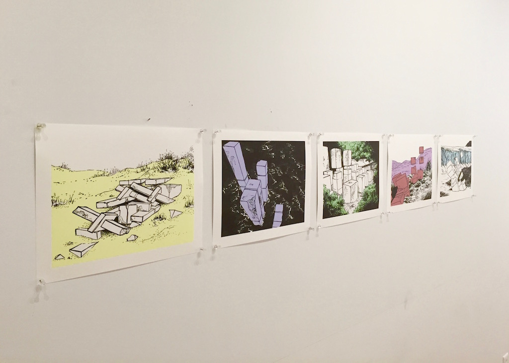

Fall 2015
5 prints on matte photo paper
Technology takes over natural phenomena and repurposes them for further advancement. Materials are harvested and manipulated for the construction of machines and infrastructure, only to be abandoned, left behind to be dissolved back into their surroundings. There is a fascinating complexity to this process, an endless chain of cause and effect that builds objects from nothing and tears them down again.
By creating these drawings, I try to understand how these processes work, the impermanence of objects, and how memory distorts things in the past. The Monument drawings begin with a Processing sketch that generates random structures, for which I then imagine the context that surrounds them. Since I always try to increase my control over the outcome of the final drawing, offloading a share of responsibility for the image to the computer creates the same tension that is found between natural and technological systems.

